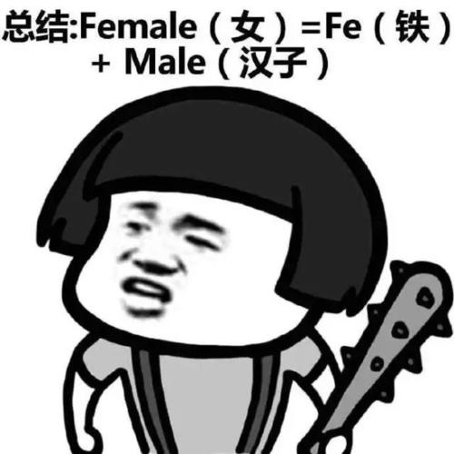
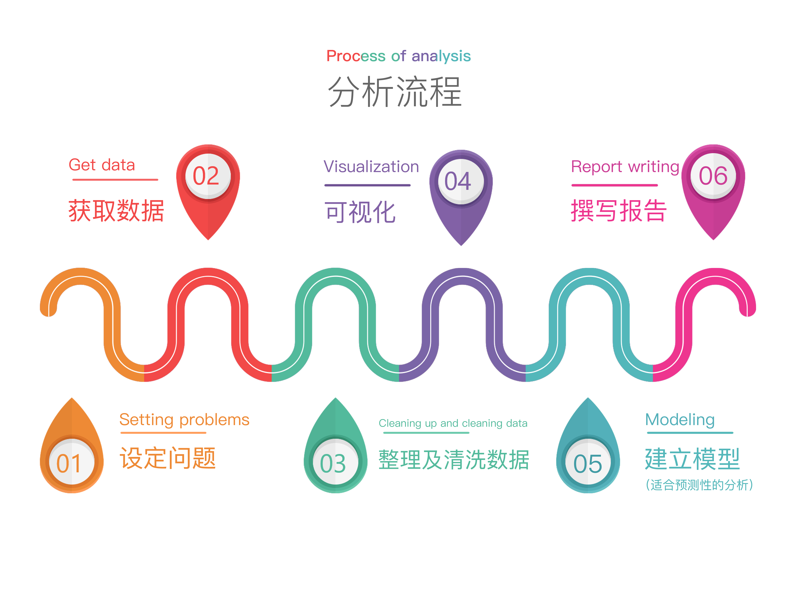
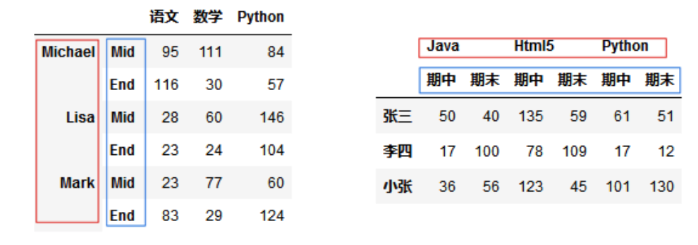
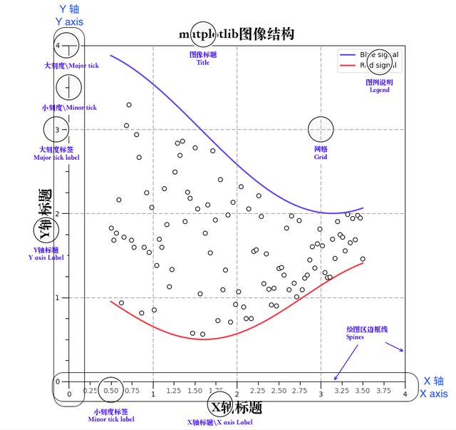
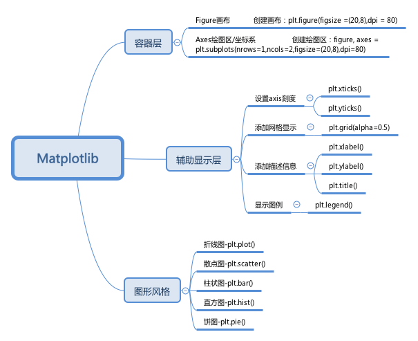

题目：路漫漫其修远兮
1.1.1. 导语
Hello, 我是小K，我们能在这里相见，说明你已经学完了我们前面的全部课程。
为了让你能不受干扰的在学习数据分析路上饱览胜景，请将屏幕调整成全屏，Windows系统：请按F11（或Fn+F11)；苹果系统：请同时按control+command+F。
虽然说我们已经学完了基于Python数据分析的大部分技能，但依旧要认真对待这一关。因为我们依然有非常重要的事情尚待完成。
本节我们将主要讲解以下内容：
- Python数据分析知识总结
- 数据分析师的必备技能
1.1.2. Python数据分析知识总结

首先要对Python数据分析进行一个总复习，形成一个完整的知识框架。当你在后面拿到任何一个数据时，可以心怀不乱。
再前面的学习中，我们了解了什么是数据分析：就是从数据里面寻求真正有价值的信息，并对实际的工作或者生活有一定的指导作用，这个过程就叫数据分析。
由此，我们总结了数据分析的基本流程：

接下来，我们主要学习了Python最重要的数据分析工具包Pandas。
在Pandas中，我们首先了解了它的两种数据结构，一个Series数据就是Excel中的一条数据，一个DataFrame数据就是Excel中的一张表。
接着我们学习了，利用索引值以及切片我们可以获取两种数据结构的数据。
示例代码如下
from pandas import Series
import pandas as pd
emp=['001','002','003','004','005','006']
name=['亚瑟', '后裔','小乔','哪吒' ,'虞姬','王昭君']
series = Series(data=name,index=emp)
# 获取多个不连续的数据
print('位置下标',series[[1,3]])
# 使用切片获取连续的数据
print('位置切片',series[0:3])
df_dict = {
'name':['ZhangSan','LiSi','WangWu','ZhaoLiu'],
'age':['18','20','19','22'],
'weight':['50','55','60','80']
}
df = pd.DataFrame(data=df_dict,index=['001','002','003','004'])
print(df)
# 通过位置索引切片获取一行
print(df[0:1])
# 通过位置索引切片获取多行
print(df[1:3])
# 获取多行里面的某几列
print(df[1:3][['name','age']])
此处需要注意：我们自定的index值被叫做索引下标，没有设置index值时会有一个默认的值叫做位置下标。
了解了如何获取数据之后，我们学习了如何利用Pandas读取本地csv和excel文件。
使用pandas.read_excel()和pandas.read_csv()方法，在指定文件路径后便可读取数据。
如果文件中包含多个数据表，可以通过sheet_name参数设置表的名字。
在使用这两个方法读取文件的时候，会默认将文件中第一行数据作为列索引值，可以通过header参数设置。
示例代码如下：
import pandas as pd
# 将第一行设置成索引
people = pd.read_csv('./data/People1.csv',header = 0)
import pandas as pd
# 不设置索引，使用索引默认值
people = pd.read_csv('./data/People1.csv',header = None)
读取数据之后，我们应该对数据进行整理和清洗。
在数据分析过程中，我们会有至少一半的时间都在整理和清洗数据。
Pandas中使用NaN来表示空值（缺失值），空值再参与计算时并不会报错，因为NaN类型是Float类型，但是计算出的结果都是NaN，会影响我们的计算结果。
所以，最好的方法就是含有空值的数据删除。
示例代码如下：
# 只要含有NaN的整行数据删掉
df.dropna()
# 想要删除整行都是空值的数据需要添加how='all'参数
df.dropna(how='all')
如果想要对列做删除操作，需要添加axis参数，axis=1表示列，axis=0表示行。
对于数据量比较大的时候，我们建议使用dropna()进行删除，并不会影响整体分析结果。
但是当我们的数据量比较少的时候，删除可能会影响整体分析结果，这时我们就可以使用填充的方式，对空值进行处理。
可以使用fillna()方法对空值进行填充。
df.fillna(value=None, method=None, axis=None, inplace=False, limit=None, downcast=None, **kwargs)
value：需要用什么值去填充缺失值
axis：确定填充维度，从行开始或是从列开始
method：
ffill：用缺失值前面的一个值代替缺失值，如果axis =1，那么就是横向的前面的值替换后面的缺失值，如 果axis=0，那么则是上面的值替换下面的缺失值。
bfill：缺失值后面的一个值代替前面的缺失值。
limit：确定填充的个数，如果limit=2，则只填充两个缺失值。
注意：method参数不能与value参数同时出现。
处理好空值以后，我们还需要考虑重复数据对数据分析结果准确度的影响。
重复数据比较多的时候，会降低分析的准确度，一会降低分析的效率。所以我们在整理数据的时候应该将重复的数据删除掉。
可以使用duplicated()方法判断是否有重复的数据，返回的是一个值为Bool类型的Series。
同时，我们也可以使用drop_duplicates()方法将重复数据进行删除。
当我们分析的数据在多个表中时候，为了方便分析就需要我们将数据进行合并。
数据合并主要包括下面两种操作：
- 轴向连接（concatenation），
pd.concat()可以沿一个轴将多个DataFrame对象连接在一起，形成一个新的DataFrame对象 - 融合（merging），
pd.merge()方法可以根据一个或多个键将不同DataFrame中的行连接起来
同时，我们也可以用逻辑运算的方式对数据进行筛选。例如：
# 准确获取到所有关注者超过100的用户数据
bools= df['关注者']>100
df1 = df[bools]
并且，可以使用sort_index()、sort_values()两个方法对数据进行排序，并且这两个方法Series和DataFrame都支持。
俗话说“物以类聚，人以群分”，我们在分析的时候，一般会将数据进行分类，然后针对某一类数据进行具体分析。
Pandas提供了一个灵活高效的groupby功能，它使你能以一种自然的方式对数据集进行切片、切块、摘要等操作。
示例代码如下：
import pandas as pd
df = pd.read_excel('./data/forbes_2018.xlsx')
# 根据gender列进行分组
groups = df.groupby('gender')
print(groups)
使用遍历，我们可以获取到每一组的数据信息：
for group_name,group_df in groups:
print(group_name,group_df.shape)
并且，可以分组后数据使用mean()、max()、min()等统计函数快速获取我们的指标值。
pandas里常用的统计函数包括：
count( )：统计列表中非空数据的个数nunique( )：统计非重复的数据的个数sum( )：统计列表中所有数值的和mean( )：计算列表中数据的平均值median( )：统计列表中数据的中位数max( )：求列表中数据的最大值min( )：求找列表中数据的最小值
如果根据多列数据进行分组后，会出现多层索引情况。

对于多层级Series的取值，可以直接使用[]的方式取值。
示例代码如下：
s['张三','期末']
s[:,'期中']
取值的方式我们可以根据剥洋葱原则，从外到内一层一层的剥。
在对多层索引DataFrame的取值是，我们推荐使用loc()函数。
示例代码：
df.loc['张三','期中']
df.loc['张三'].loc['期中']
df.loc[('张三','期中'),:]
DataFrame和Series有一个同样的注意点，就是无法直接对二级索引直接进行索引，必须让二级索引变成一级索引后才能对其进行索引！
在金融、经济、物理学等领域，都需要在多个时间点观测或者测量数据，这样就产生了关于时间序列的数据。
我们在分析的时候，可以将时间列数据设置成数据的索引，然后选出一定时间段内的数据进行分析。
代码示例如下：
import pandas as pd
import numpy as np
time_index = pd.date_range('2019-01-01', periods=400)
time_data = np.random.randint(100,size=400)
date_time = pd.Series(data=time_data,index=time_index)
可以依据年份进行索引：
date_time['2020']
可以依据年和月进行索引：
date_time['2019-10']
可以使用时间戳进行切片获取数据
date_time['2019-10-05':'2019-10-10']
有的时候用csv导入到时间数据时，默认的是字符串的数据类型 ，当可视化的时候，会出现没有按时间先后顺序的方式绘图 ，所以需要将字符串解析为时间类型的数据类型。
使用Pandas的to_datetime()方法可以将字符串形式的日期转换成时间格式。
pd.to_datetime(arg,format=None)
arg：需要修改的数据
format：数据的格式
以上是我们对数据的获取以及整理的基本操作，俗话说：“文不如表，表不如图”，如果我们将海量的数据绘制成图，就可以让我们的数据更加直观的呈现，更具说服力。
所以，我紧接着又学习了Python中另外一个库Matplotlib，它的功能非常强大，可以通过调用函数轻松方便地绘制数据分析中常见的各种图像，比如折线图、条形图、柱状图、散点图、饼图等。
在Matplotlib的学习中我们首先要了解常见图形种类及意义。
- 折线图：以折线的上升或下降来表示统计数量的增减变化的统计图
特点：能够显示数据的变化趋势，反映事物的变化情况。(变化)
散点图：用两组数据构成多个坐标点，考察坐标点的分布,判断两变量之间是否存在某种关联或总结坐标点的分布模式。
特点：判断变量之间是否存在数量关联趋势,展示离群点(分布规律)
柱状图：排列在工作表的列或行中的数据可以绘制到柱状图中。
特点：绘制连离散的数据,能够一眼看出各个数据的大小,比较数据之间的差别。(统计/对比)
直方图：由一系列高度不等的纵向条纹或线段表示数据分布的情况。 一般用横轴表示数据范围，纵轴表示分布情况。
特点：绘制连续性的数据展示一组或者多组数据的分布状况(统计)
饼图：用于表示不同分类的占比情况，通过弧度大小来对比各种分类。
特点：分类数据的占比情况(占比)
想要学好用好Matplotlib是特别简单的，前提就是要必须清楚的了解Matplotlib图像组成。

同时，我们还要清楚每种图形的绘制方法，折线图：plt.plot()；柱状图：plt.bar()；直方图：plt.hist()；散点图：plt.scatter();饼图：plt.pie()。
在使用Matplotlib时候需要注意，Matplotlib画的图不显示中文，所以我们的处理方式是添加字体属性。
示例代码如下：
from matplotlib import pyplot as plt
from matplotlib import font_manager
import random
# 创建字体对象
my_font = font_manager.FontProperties(fname='./data/STSONG.TTF',size=18)
x = range(0,120)
y = [random.randint(10,30) for i in range(120)]
# 添加字体属性
plt.ylabel("次数",fontproperties=my_font)
plt.xlabel("时间",fontproperties=my_font)
# 设置标题
plt.title('每分钟跳动次数',fontproperties=my_font)
plt.plot(x,y)
plt.show()
并且，我们还可以通过xticks()和yticks()自定义x轴和y轴的刻度值。
下面我们总结一下Matplotlib常用的方法：

Seaborn和Matplotlib是Python最强大的两个可视化库。Seaborn其默认主题让人惊讶，而Matplotlib可以通过其多个分类为用户打造专属功能。
Seaborn的底层是基于Matplotlib的，他们的差异有点像在点餐时选套餐还是自己点的区别，Matplotlib是独立点菜，可能费时费心（尤其是对我这种选择困难症患者...）但最后上桌的菜全是特别适合自己的；而Seaborn是点套餐，特别简单，一切都是配好的，虽然省时省心，但可能套餐里总有些菜是不那么合自己口味的。
所以，在需要绘制图形的时候，我们可以根据自己的喜好自行选择。
以上，就是我们整个Python数据分析基础内容。
下面，我们来了解一下数据分析师需要还需要掌握哪些技能？
1.1.3. 数据分析师的必备技能
俗话说“台上一分钟，台下十年功”。任何人取得的任何成就都不是一蹴而就的，学习之路更应如此，那么学习数据分析你需要的基本功是什么呢？
千里之行，始于足下，数据分析，始于Excel。数据分析的第一步，就是能够使用Excel进行各种业务数据研究。
数据分析中最常用的语言就是SQL，无论是数据的提取、转换，还是各种数据计算，SQL都是最好的武器。
基础数学和统计学可以提高你的分析能力，了解为什么和在哪里使用平均值，中位数和模式。
在数据可视化方面，除了Excel、matplotlib以外，还有一个常用的就是Tableau，通过简单的拖拽数据处理方式，迅速对数据进行初级透视。
数据报告的撰写，是数据分析的最后一步，也是最重要的一步，好的分析报告是你升值加薪的法宝。
以上，给大家提供了一些数据分析中要掌握的技能，以供大家后续的学习。
1.1.4. 结语
到此，我们的Python数据分析基础课就将告一段落了。
我知道你在首次使用代码拿到数据的欣喜，我知道你初次接触Pandas时候的困惑，我知道你接触Matplotlib时的不解……
因为，我们曾经都是一个初学者，与你经历过同样的过程。
路漫漫其修远兮，数据分析的路还很长，重要的是坚持和练习。
“乘风破浪会有时，直挂云帆济沧海”，祝你在学习数据分析的道路上越走越远！
“青山不改，绿水长流”，我们有缘江湖再会！